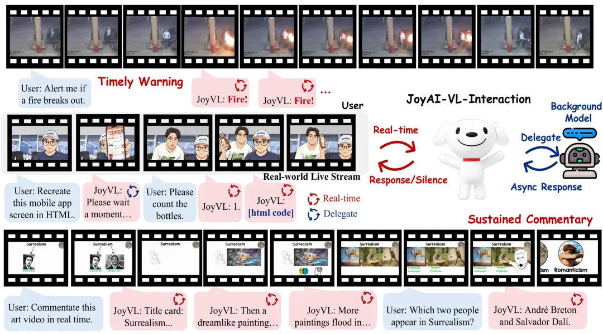
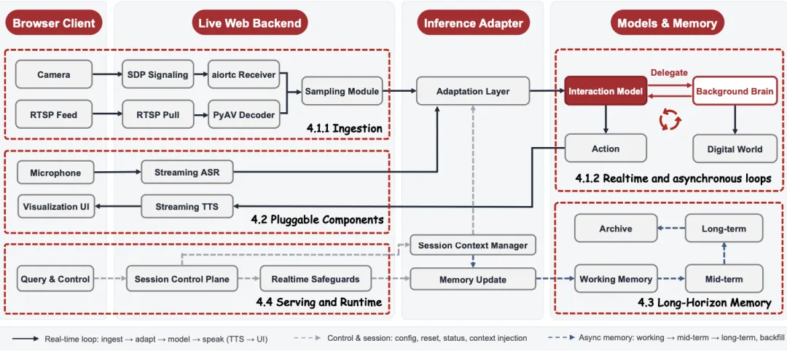
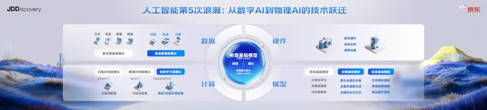
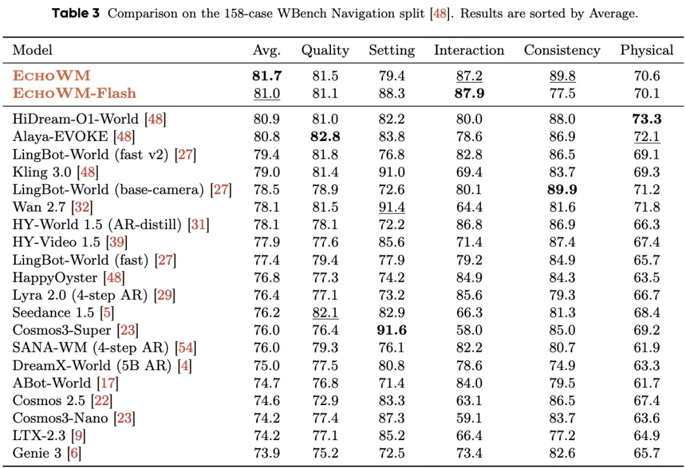
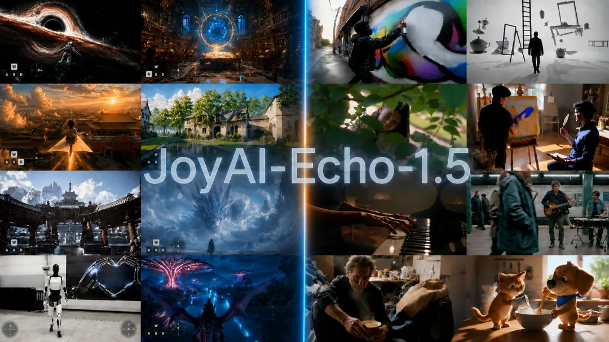
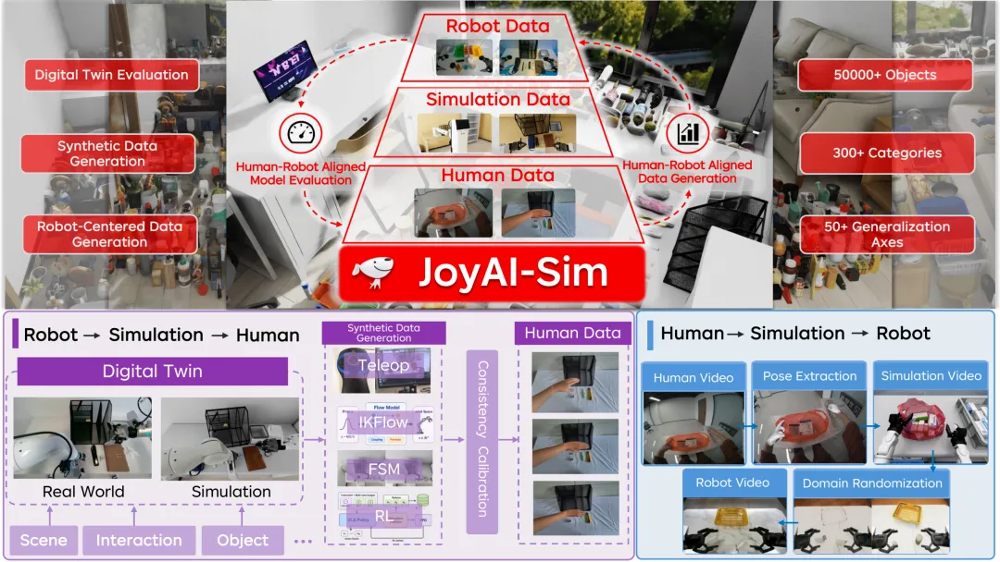
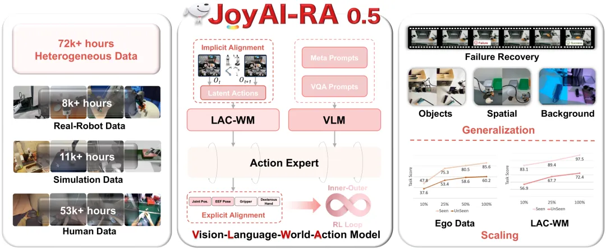
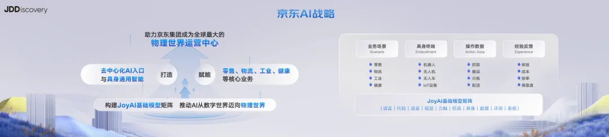

新智元报道
新智元报道

「麻烦你，帮我看一下。」
一副 AI 眼镜的价值，可能就藏在少说一次这样的话里。
到了陌生的地方，视障用户最需要的不是一个什么都能聊的 AI，而是一个能告诉他周围有什么、该注意什么的帮手。该提醒时及时提醒，没必要时就安静，别在耳边说个不停。
京东在本次 JDD 上展示的 AI 眼镜，瞄准的正是这个需求：接入 JoyAI-VL-Interaction 模型，通过第一视角持续理解周围环境，为全盲及低视力人群提供辅助，减少「必须问人」的时刻。
这是一副充满爱与希望的智能眼镜。它也是观察京东 AI 路线的一个小切口。
JDD 期间，京东发布并开源JoyAI-Echo WM 实时可交互世界模型，并带来一整套面向物理世界的模型矩阵升级。
从看懂环境，到判断何时回应，再到预测行动之后会发生什么。
一副眼镜背后，展开的是一整套从屏幕走向真实世界的技术布局。

戴上这副眼镜以后，聊天框里的规矩就不成立了。
你走在马路上，左边有辆车在倒车，右边有个台阶，前面有人跟你打招呼。这些事同时发生，没有人会停下来等你反应完再来下一件。
眼镜没有光标。戴上它，所有东西一起涌过来，它得自己判断：左边那辆车要不要提醒？前面那个人要不要告诉用户？台阶是现在就说还是走近了再说？
过去两年，大家比的是模型答得准不准。戴上眼镜才发现，第一道题是这事儿该不该开口说。
传统方案通常是一堆模块拼起来——先用传感器识别物体，再触发规则引擎判距离，最后调语言模型生成文本转语音。环节多、延迟高，动辄好几秒。
更麻烦的是，拼凑式架构在复杂动态环境里不是「误报」就是「失语」，该说的没说，不该说的吵个不停。
JoyAI-VL-Interaction 走的是完全不同的路。
Github：https://github.com/jd-opensource/JoyAI-VL-Interaction
它是一个 8B 规模，以视觉为核心的交互模型，是全球首个全栈开源的 interaction 模型和系统。
从架构层面，它把感知、推理和交互决策融进了同一个模型里，而不是在外面挂一堆检测器和规则引擎。

它能对持续的视频流做实时理解，自己判断什么时候该说话、什么时候该闭嘴，响应压到亚秒级。
遇到复杂问题，比如需要调用工具或做深度推理，就异步委托给后台 Agent 接着做，前台继续盯着现场，不会因为后台在忙就把人晾那儿。

京东集团副总裁、京东探索研究院副院长段楠提到，这是全球首个开源的、能做到真正实时自主交互的多模态理解大模型。在58项真人盲评中，对比豆包视频通话助手胜率 77.6%，对比 Gemini 胜率 87.9%，达到流式交互模型领域里最好的效果。
它的背后是模型从「回答问题」到「持续在场」的范式切换。
以前 AI 的本分是被提问、给答案；现在它要自己决定什么时候该说话、说什么、哪些事超出能力要交给后台。
而一副眼镜逼出来的这个问题，往上追一层，就是京东探索研究院这两年一直在补的东西。
当 AI 通过可穿戴设备持续盯着真实环境，它需要的能力已经不止是读懂一段文字或一张图。
理解、生成、实时交互、世界建模、具身操作缺一块，机器就只能在屏幕里聪明。
段楠博士把这件事讲得很透：相比数字 AI，物理 AI 不仅需要物理数据的规模化，还需要持续学习的规模化、物理基础模型的新突破，以及一个数字 AI 没有的新维度——硬件规模化协同。
数据、模型、算法加上硬件，四条腿一起走，才走得进物理世界。

这正是 JDD 期间京东集中展示 JoyAI 基础模型矩阵的逻辑起点。
不是为了凑数量，而是因为物理世界天然需要一整套协作的能力栈：
生成视觉内容（JoyAI-Echo LongVideo、JoyAI-Image-Edit）、
实时编辑视频（JoyAI-Video-Edit）、
听得懂声音、说得出人话 （JoyAI-Voice 2.0、JoyAI-Talker）
理解并模拟世界运行规律（JoyAI-Echo WM）、
最终落到机器人操作（JoyAI-RA）。
每一块拎出来是一个独立模型，拼在一起才是一条从「看见」到「动手」的完整链路。
这批模型里最先该看的，是 JoyAI-EchoWM。

用机器人的视角生成一段「如果我往前走三步、伸手去拿那个杯子」的模拟视频，物理规则是对的，碰撞是真的，不用真的伸手就能知道这个动作行不行。
把这套能力落到具身方向，就是京东在世界模型方向上的探索——JoyAI-EchoWM。
如果说视频模型侧重的是物理保真度：世界怎么运转，它要模拟得准；那 JoyAI-EchoWM 侧重的是交互保真度：人进入这个世界之后，环境怎么跟着响应。
JoyAI-EchoWM 是一个实时可交互世界模型。
它能根据用户的控制信号持续生成并动态调整画面与声音，在 WBench 导航评测中拿到 81.7 的综合分、交互得分 87.2，位列前茅。

更关键的是，它生成的不只是画面——环境声、音乐、语音都跟着画面同步演化，生成的是一个可以「走进去」的世界，而不只是一段播放完就结束的视频。
JoyAI-EchoWM 是沉浸式环境的交互引擎。而它们能走到今天，离不开 JoyAI-Echo 的技术积累。

段楠提到，JoyAI-Echo 在长程视频的多模态记忆、音画同步和后训练上做了关键创新，「为下半年的视频世界模型奠定了技术基础」。
2026 年，世界模型是 AI 行业最拥挤的赛道之一。
京东的差异化不在模型参数，在于手里握着仓库、门店、产线这些真实的物理场景。
这些场景没有标准化的舞台布景，没有预设的灯光，甚至连地面平不平都不确定。但也正因为如此，谁能在这些非标场景里把世界模型跑通，谁就拿到了真正的门票。
基础模型矩阵是能力的心脏，但能力要真正走进物理世界，还需要两条管道：一条通向数据和验证，一条通向真实业务。
数据这条线上，京东同步展示了 EgoLive、JoyAI-Sim 和 JoyAI-RA 0.5三项。
EgoLive是规模最大、且专注于真实世界任务导向型人类日常活动的目前开源标注的第一人称数据集。
JoyAI-Sim是一个仿真工具链，它通过合成符合人类认知的数据，来低成本地评估机器人模型性能，并补充EgoLive等真实数据集难以覆盖的极端或长尾场景。
JoyAI-RA 0.5是一个通用视觉-语言-世界-动作（VLWA）框架，旨在通过双重动作对齐（Dual Action Alignment）机制，将物理世界动态先验与视觉语义结合，实现跨异构数据的规模化操作学习。
EgoLive 收录了 2000 小时 60fps 的高保真双目视频，65866 段数据，346 个真实场景任务，覆盖仓储、家庭、药房等场景。
JoyAI-Sim 让仿真和真机的表现对得上，一致性达到 90%，效率快了 3.2 倍。

JoyAI-RA 0.5 站在链条末端，从人类视频里学物理动态，让机器人在真实场景里操作得更稳。

三件事串起来，就是一条「采数据 → 建仿真 → 跑真机」的完整管线。
业务这条线上，JDD 同步展示了零售、物流、健康、工业、政务五大行业模型。
这些模型面对的不再是提示词，而是订单、病历、图纸和设备。
京医千询 3.0 在 HealthBench 拿下双榜第一，能自己看 CT、核磁这些医学影像，3D 阅片准确率超过 GPT-5.5 近 15 个百分点。
JoyIndustrial 2.0 经受了超过 10 亿次工业调用，VisCAD 1.0 打通了文生 CAD 图到零件装配的全链路，核心设计任务准确率领先通用模型 15%。
OxygenVLM 4.0 已支撑图搜、素材质检等核心电商业务，物流超脑 3.0 和政务大模型也各自扎进了自己的流程。
把视角拉远，京东的战略路径其实非常清楚：从数字智能到附身智能，再到物理智能。
段楠在这场发布中系统阐释了京东对 AI 演进的判断。
过去 75 年，从早期的专家系统、统计模型，到深度学习和基础模型,AI经历了四次重要变革。
整个演进过程本质上是一场围绕数据、算力和模型的持续规模化。而现在，AI 正在进入第五次技术变革：从数字世界走向物理世界。
路径也很清楚：用蕴含更多物理信息的数据，训练全模态和具身基础模型；让模型与环境不断交互，持续迭代进化；最终把模型部署到各类物理硬件和设备中，在物理世界里辅助用户完成各种任务。
在这一背景下，京东把技术体系分成三块：
数字智能：先把内容理解透，在数字世界里把模型能力堆起来。
附身智能：把 AI 模型部署到各种真实世界的硬件设备上，实现人与设备之间自然、实时的交互。
具身智能：把模型部署到具身本体上，让机器人帮助人类完成生产和生活中的各类任务。

京东的底气不只来自人才和技术积累，更来自自身独有的优势：丰富的业务场景、海量的具身终端、真实的操作数据，以及完整的反馈闭环。
段楠还给出了未来三年的里程碑：
2026 年底，全模态实时交互模型达到世界顶级水准，为附身智能打底；
2027 年，完成具身数据集的规模化采集，具身模型在通用能力和垂域场景上都做到世界领先并落地；
2028 年，JoyAI 基础模型矩阵更多地走入生活和生产，服务千行百业和千家万户。
京东探索研究院想做的世界一流 JoyAI 基础模型矩阵，指向的也是同一个位置：让 AI 从数字世界走进物理世界，助力京东成为全球最大的物理世界运营中心。
这话听上去很大，拆开看却是些很笨重的活——采数据、建仿真、修机器、跑流程，每一样都省不掉。
但也正是这种笨重，构成了护城河。
京东有 20 多年攒下的仓储、物流、零售、健康场景，它的模型从第一天起就泡在真实业务里，而不是实验室的 demo 里。
过去几年，AI 的用户是坐在屏幕前打字的人。问题有边界，答案有终点，对话有回车键。
现在，它的用户变成了这个一直在变、从不暂停的世界。没有人给它出题，也没有人告诉它什么时候可以交卷。
文章开头那副眼镜替一个人看清了眼前的路。京东想做的，是让模型看清整个物理世界。
从鼻梁上的一副眼镜，到全球最大的物理世界运营中心。这条路很长，但方向已经清楚。
编辑：大卫 所罗门